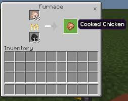
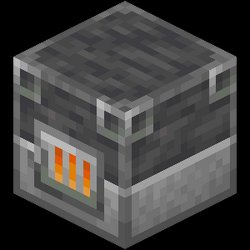
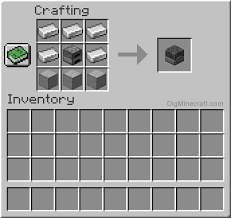

Surviving in Minecraft without food is quite nearly impossible to do, while there are many methods in getting food, the most efficient way is to hunt for animals get their meat and then cook it, while you can still eat raw cooking it is more beneficial and efficient so now we'll be covering cooking and it's methods
First of all you will need to craft a FURNACE or a SMOKER
Now once you have a furnace you can start cooking, all you need is some raw meat ( obtained from chickens, cows, and pigs). And also anything can be used as fuel like wood, or coal etc... And shortly after you have put in the requirements the food should be cooked and is ready to eat.
So now let's move on to smelting, smelting is also one of the most important things in the whole gameplay, as almost in every part of the game you are in need of smelting, so now we will be introducing the components of smelting.
First of all to smelt you would need to use a FURNACE or a BLAST FURNACE.
 and then get the things you need to smelt, afterwards put those in the furnace or smoker the same way you do to cook food to start smelting, after waiting for a few moments you should be able to get your items
Back to home:
To Home